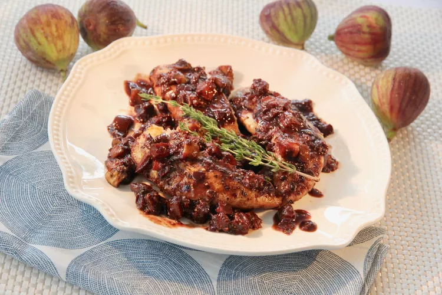

Chicken Tenders with Balsamic-Fig Sauce

Description
Drizzled over chicken, this textural fig sauce is made with balsamic vinegar which is a nice contrast to the sweet figs. Thyme provides just a bit of savoriness to the sweet, rich sauce.
Ingredients
Chicken
- 1 pound chicken tenders
- salt and ground black pepper to taste
- ¼ cup all-purpose flour
- 2 tablespoons olive oil
- 1 tablespoon butter
Sauce
- 1 shallot, minced
- 1 clove garlic, minced
- ½ cup red wine
- ¼ cup balsamic vinegar
- 4 fresh figs, cut into ½-inch pieces
- 1 teaspoon minced fresh thyme leaves
- 1 teaspoon Dijon mustard
- 1 teaspoon honey
- ½ teaspoon salt
- 1 teaspoon butter
Steps
- Make the chicken: Season chicken with salt and pepper on both sides, then lightly coat with flour, shaking off excess.
- Heat olive oil and butter in a large nonstick skillet over medium heat. Add chicken and cook until tenders are golden brown, no longer pink in the centers, and the juices run clear, 5 to 6 minutes, flipping halfway through. Transfer to a plate and cover loosely with aluminum foil to keep warm.
- Make the sauce: Add shallot and garlic to the same skillet and cook until softened, about 2 minutes. Add red wine and balsamic vinegar; simmer until reduced by half, 3 to 5 minutes. Stir in figs, thyme, mustard, honey, and salt; bring to a boil. Reduce the heat to low or medium-low and simmer until thickened, about 3 minutes. Remove from the heat and stir in butter.
- Spoon sauce over warm chicken tenders, or add chicken back to the skillet to briefly reheat. Serve immediately.
Home